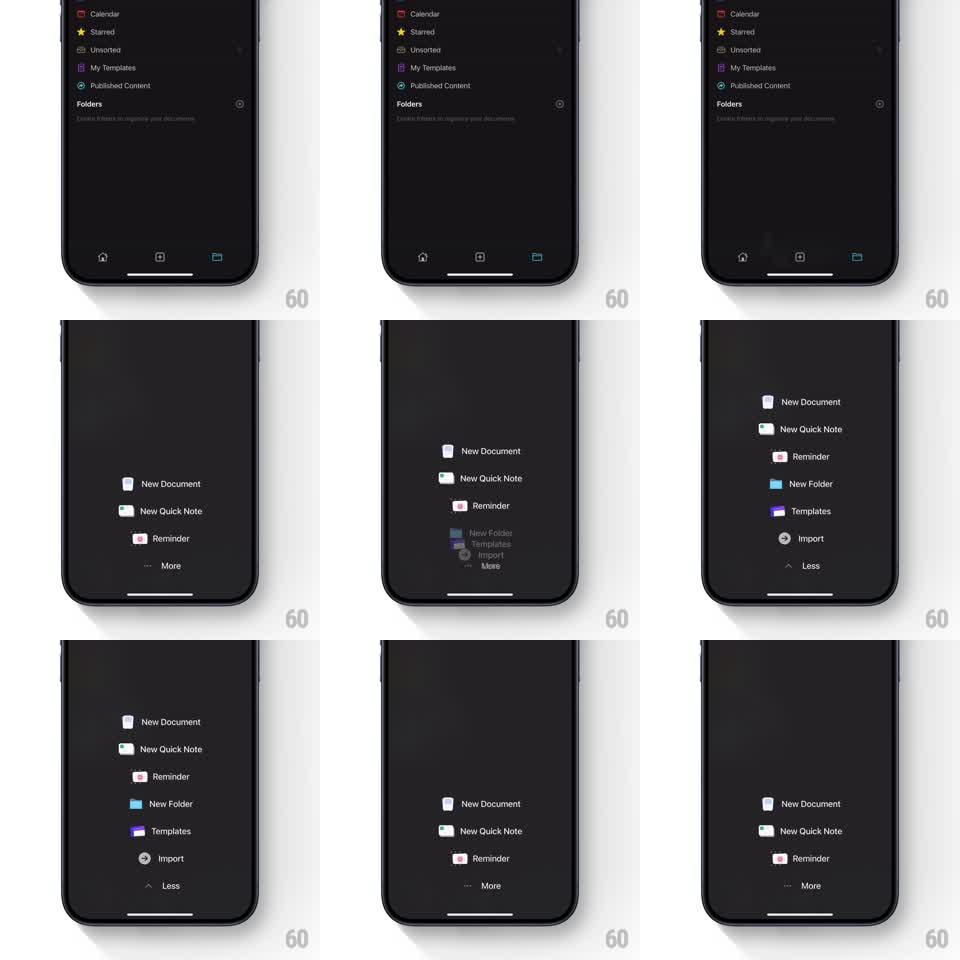

Media
Frame-by-frame

Rebuild this interaction 1:1: Craft's floating quick-action menu - a compact floating list anchored above the tab bar that expands with a staggered spring when you tap More, revealing extra actions, and collapses back on Less.

Rebuild this interaction 1:1: Craft's floating quick-action menu - a compact floating list anchored above the tab bar that expands with a staggered spring when you tap More, revealing extra actions, and collapses back on Less. ## Integration Integration: stack-agnostic spec - springs given as stiffness/damping, timed motions as duration + curve; map every value to your framework and animation library of choice. ## Scene Dark Craft home (sidebar list: Calendar, Starred, Unsorted, My Templates, Published Content; Folders section; bottom tab bar). Floating above the tab bar, a dark pill menu listing actions with colored glyphs: New Document, New Quick Note, Reminder, and a "More" row. Expanded state adds New Folder, Templates, Import, and the last row flips to "Less". ## Motion spec Pattern: spring-staggered menu expansion. - Tap More: the menu's container grows downward-and-outward with a spring (stiffness ~320, damping ~24); its corner radius eases slightly as it grows. - Hidden rows appear staggered from the boundary: New Folder, Templates, Import each fade in and slide up ~12px (200ms, 60ms apart), while existing rows glide apart to make room (position tween matched to the container spring). - The More label crossfades to Less (~150ms) with a small chevron flip. - Tap Less: the reverse - extra rows slide down and fade (staggered 50ms), container springs back to compact height, existing rows glide together. - The backdrop and tab bar stay put; only the menu moves. ## Calibration - The container growth and row stagger share one timeline - rows must never be visible outside the growing container (clip to bounds). - Keep the spring smooth: this menu opens dozens of times a day, so no overshoot theatrics. ## Reduced motion Menu crossfades between compact and expanded states (150ms), no stagger. ## Don't miss - Rows that stay visible in both states (New Document, New Quick Note, Reminder) never re-animate - they only shift position. - The glyph colors (blue folder, purple template, gray import) are the scan anchors - keep them saturated against the dark menu.